iУглопись
- Один из моих первых алфавитов. Буквы угловатые, такие легко выбивать в камне.
- Если написать просто букву, она будет обозначать то, что она обычно значит.
- Если над буквой нарисовать макрон, то звук сменится на парный: /л/ станет /р/.
- Если под гласной нарисовать макрон, то она йотируется; к примеру: /а/ станет /й'а/.
- Если под согласной нарисовать макрон, то она смягчится; к примеру: /п/ станет /п'/.
- Буква ¬ (в таблице её нет) обозначает звук /й'/. С ней нельзя использовать макрон.
Таблица символов
| Буква | Чтение | Пара |
|---|
| 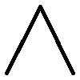 | /а/ | /ә/ |
| 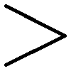 | /и/ | /ы/ |
| 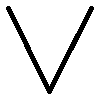 | /у/ | /ў/ |
| 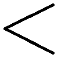 | /э/ | /ү/ |
| 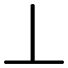 | /ц/ | /дз/ |
| 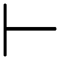 | /х/ | /ғ/ |
| 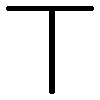 | /ч/ | /дж/ |
| 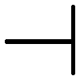 | /о/ | /ө/ |
| 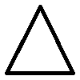 | /л/ | /р/ |
| 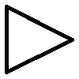 | /с/ | /з/ |
| 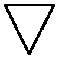 | /ф/ | /в/ |
| 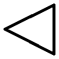 | /ш/ | /ж/ |
| 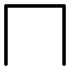 | /п/ | /б/ |
| 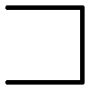 | /н/ | /м/ |
| 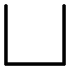 | /т/ | /д/ |
| 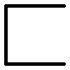 | /к/ | /г/ |